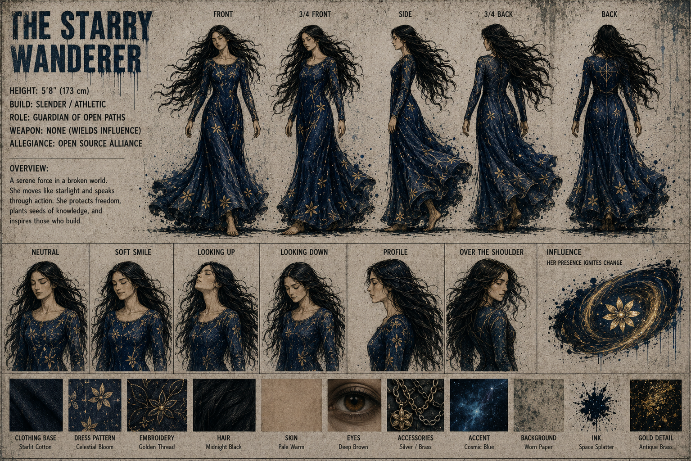

✨ Tinuviel — The Starry Wanderer


Core Stats
| Attribute | Value |
|---|---|
| Height | 5'8" (173 cm) |
| Build | Slender / Athletic |
| Role | Guardian of Open Paths — Sentinel / Guide |
| Weapon | None (Wields Influence) |
| Allegiance | Open Source Alliance |
| Signature Item | Celestial Astrolabe |
Focus
Knowledge, Wisdom, Inspiration
Overview
A serene force in a broken world. She moves like starlight and speaks through action. She protects freedom, plants seeds of knowledge, and inspires those who build.
Influence
Her presence ignites change.
Tinuviel does not wield a weapon in the traditional sense. Her power is influence itself — a swirling galaxy of inspiration that surrounds her, depicted as a cosmic nebula with a golden flower at its center.
Material & Texture Guide
| Material | Description |
|---|---|
| Clothing Base | Starlit Cotton |
| Dress Pattern | Celestial Bloom |
| Embroidery | Golden Thread |
| Hair | Midnight Black |
| Skin | Pale Warm |
| Eyes | Deep Brown |
| Accessories | Silver / Brass |
| Accent | Cosmic Blue |
| Background | Worn Paper |
| Ink | Space Splatter |
| Gold Detail | Antique Brass |
Character Reference Sheet Views
- Front, 3/4 Front, Side, 3/4 Back, Back
- Expressions: Neutral, Soft Smile, Looking Up, Looking Down, Profile, Over the Shoulder
- Influence Graphic: Galaxy/nebula with golden flower center
Design Notes
Tinuviel is the squad's mystical guide and guardian. Long flowing dark hair, a dark blue gown adorned with golden celestial patterns and star/constellation motifs. She is barefoot — moving like starlight, grounded yet ethereal. In the story scenes, she holds a ship's wheel (helm) and a celestial astrolabe, symbolizing her role as navigator and guide. The starry dress pattern reflects her cosmic nature and connection to the Open Source Alliance.